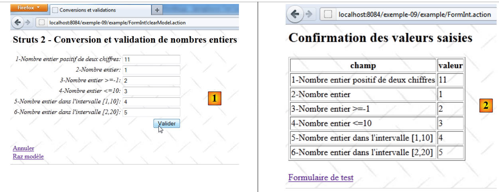
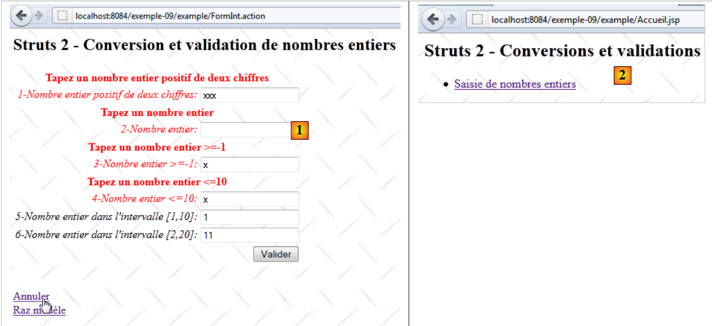

11. Exemple 09 - Conversion et validation des nombres entiers
Nous abordons maintenant une série d'exemples sur la conversion et la validation des paramètres d'un formulaire. Le problème est le suivant. Pour traiter une URL de la forme [http://machine:port/.../Action], le contrôleur [FilterDispatcher] instancie la classe qui implémente l'action demandée et exécute l'une de ses méthodes, par défaut la méthode appelée execute. L'appel à cette méthode execute traverse une série d'intercepteurs :
 |
La liste des intercepteurs est définie dans le fichier [struts-default.xml] à la racine de l'archive [struts2-core.jar]. La liste des intercepteurs qui y est définie est la suivante :
<interceptor-stack name="defaultStack">
<interceptor-ref name="exception"/>
<interceptor-ref name="alias"/>
<interceptor-ref name="servletConfig"/>
<interceptor-ref name="i18n"/>
<interceptor-ref name="prepare"/>
<interceptor-ref name="chain"/>
<interceptor-ref name="debugging"/>
<interceptor-ref name="scopedModelDriven"/>
<interceptor-ref name="modelDriven"/>
<interceptor-ref name="fileUpload"/>
<interceptor-ref name="checkbox"/>
<interceptor-ref name="multiselect"/>
<interceptor-ref name="staticParams"/>
<interceptor-ref name="actionMappingParams"/>
<interceptor-ref name="params">
<param name="excludeParams">dojo\..*,^struts\..*</param>
</interceptor-ref>
<interceptor-ref name="conversionError"/>
<interceptor-ref name="validation">
<param name="excludeMethods">input,back,cancel,browse</param>
</interceptor-ref>
<interceptor-ref name="workflow">
<param name="excludeMethods">input,back,cancel,browse</param>
</interceptor-ref>
</interceptor-stack>
Parmi les intercepteurs, il y en a un qui se charge d'injecter dans l'action les valeurs valeuri des paramètres parami qui accompagnent la requête sous la forme parami=valeuri. On sait que valeuri sera injectée dans le champ parami de l'action via la méthode setParami si elle existe. Sinon, aucune injection n'intervient et aucune erreur n'est signalée.
La chaîne parami=valeuri est une chaîne de caractères. Jusqu'à maintenant, l'injection de valeuri a été faite dans des champs parami de type String :
L'injection de la chaîne valeuri comme valeur de la chaîne parami ne posait pas de problème. Si parami n'est pas de type String, alors valeuri doit subir une conversion vers le type Ti de parami. C'est le problème de la conversion. Par exemple, on voudra qu'un âge soit entier et on écrira dans l'action :
Par ailleurs, on peut vouloir délimiter l'âge entre 1 et 150. On a là un problème de validation. Le paramètre parami peut être converti dans le bon type sans pour autant être valide. Il y a donc deux étapes à passer. Si on revient au schéma du traitement d'une requête :
 |
Deux intercepteurs vont s'occuper respectivement de la conversion et de la validation des paramètres. Si l'une des étapes échoue, la requête ne poursuit pas son cheminement vers l'action (circuit rouge ci-dessus). Le formulaire à partir duquel ont été postés les paramètres erronés est réaffiché avec des messages d'erreurs.
Les intercepteurs concernés par la conversion et la validation des paramètres sont les intercepteurs conversionError et validation des lignes 19 et 20 de la liste des intercepteurs présentée précédemment. On notera lignes 20-22 que l'intercepteur validation n'est pas appliqué si la méthode appelée est l'une des méthodes input, back, cancel, browse. Nous utiliserons cette propriété par la suite.
Nous commençons par étudier la conversion et la validation des nombres entiers. Nous allons passer du temps sur ce premier exemple car la validation fait intervenir de nombreux éléments. Une fois ceux-ci connus, nous irons plus vite sur les exemples qui suivront.
11.1. Le formulaire
 |
- en [1], le formulaire de saisie
- en [2], le résultat lorsqu'on valide sans entrer de valeurs
11.2. Le projet Netbeans
Le projet Netbeans est le suivant :
 |
- en [1], les trois vues de l'application
- en [2], les codes source, les fichiers des messages internationalisés, les fichiers de configuration de Struts.
11.3. Configuration de Struts
L'application est configurée par les fichiers [struts.xml] et [example.xml].
Le fichier [struts.xml] est le suivant :
<?xml version="1.0" encoding="UTF-8" ?>
<!DOCTYPE struts PUBLIC
"-//Apache Software Foundation//DTD Struts Configuration 2.0//EN"
"http://struts.apache.org/dtds/struts-2.0.dtd">
<struts>
<constant name="struts.custom.i18n.resources" value="messages" />
<include file="example/example.xml"/>
<package name="default" namespace="/" extends="struts-default">
<default-action-ref name="index" />
<action name="index">
<result type="redirectAction">
<param name="actionName">Accueil</param>
<param name="namespace">/example</param>
</result>
</action>
</package>
</struts>
Les lignes 12-18 définissent l'action [/example/Accueil] comme action par défaut lorsque l'utilisateur n'en précise pas.
Le fichier [example.xml] est le suivant :
<?xml version="1.0" encoding="UTF-8" ?>
<!DOCTYPE struts PUBLIC
"-//Apache Software Foundation//DTD Struts Configuration 2.0//EN"
"http://struts.apache.org/dtds/struts-2.0.dtd">
<struts>
<package name="example" namespace="/example" extends="struts-default">
<action name="Accueil">
<result name="success">/example/Accueil.JSP</result>
</action>
<action name="FormInt" class="example.FormInt">
<result name="input">/example/FormInt.JSP</result>
<result name="cancel" type="redirect">/example/Accueil.JSP</result>
<result name="success">/example/ConfirmationFormInt.JSP</result>
</action>
</package>
</struts>
- lignes 8-10 : l'action [Accueil] fait afficher la vue [Accueil.JSP]
- ligne 11 : l'action [FormInt] fait exécuter par défaut la méthode execute de la classe [example.FormInt]. Nous verrons que deux autres méthodes seront exécutées, les méthodes input et cancel. Ces méthodes seront alors précisées dans les paramètres de la requête.
- ligne 12 : la clé input fera afficher la vue [FormInt.JSP] (ligne 5). Cette vue est celle du formulaire.
- ligne 13 : la clé cancel sera retournée par une méthode cancel associé au lien [Annuler]. La vue rendue sera alors la vue [Accueil.JSP] après une redirection (type=redirect).
- lligne 14 : la clé success est rendue par la méthode execute de l'action [FormInt]. Si la requête arrive jusqu'à la méthode execute, c'est qu'elle a passé avec succès tous les intercepteurs, notamment ceux qui vérifient la validité des paramètres. La méthode execute se contente alors de rendre la clé success qui va faire afficher la vue de confirmation [ConfirmationInt.JSP].
11.4. Les fichiers de messages
Le fichier [messages.properties] est le suivant :
Accueil.titre=Accueil
Accueil.message=Struts 2 - Conversions et validations
Accueil.FormInt=Saisie de nombres entiers
Form.titre=Conversions et validations
FormInt.message=Struts 2 - Conversion et validation de nombres entiers
Form.submitText=Valider
Form.cancelText=Annuler
Form.clearModel=Raz mod\u00e8le
Confirmation.titre=Confirmation
Confirmation.message=Confirmation des valeurs saisies
Confirmation.champ=champ
Confirmation.valeur=valeur
Confirmation.lien=Formulaire de test
En plus de ce fichier, les vues utilisent le fichier [FormInt.properties] suivant :
int1.prompt=1-Nombre entier positif de deux chiffres
int1.error=Tapez un nombre entier positif de deux chiffres
int2.prompt=2-Nombre entier
int2.error=Tapez un nombre entier
int3.prompt=3-Nombre entier >=-1
int3.error=Tapez un nombre entier >=-1
int4.prompt=4-Nombre entier <=10
int4.error=Tapez un nombre entier <=10
int5.prompt=5-Nombre entier dans l''intervalle [1,10]
int5.error=Tapez un nombre entier dans l''intervalle [1,10]
int6.prompt=6-Nombre entier dans l''intervalle [2,20]
int6.error=Tapez un nombre entier dans l''intervalle [2,20]
Le fichier [FormInt.properties] n'est exploité que lorsque l'action qui a généré la vue, est l'action [FormInt]. C'est une façon de segmenter le fichier des messages si celui-ci est trop important. On internationalise les messages de l'action Action dans le fichier [Action.properties].
11.5. Les vues et les actions
Nous présentons maintenant les vues et les actions de l'application. D'après la configuration de l'application :
<?xml version="1.0" encoding="UTF-8" ?>
<!DOCTYPE struts PUBLIC
"-//Apache Software Foundation//DTD Struts Configuration 2.0//EN"
"http://struts.apache.org/dtds/struts-2.0.dtd">
<struts>
<package name="example" namespace="/example" extends="struts-default">
<action name="Accueil">
<result name="success">/example/Accueil.JSP</result>
</action>
<action name="FormInt" class="example.FormInt">
<result name="input">/example/FormInt.JSP</result>
<result name="cancel" type="redirect">/example/Accueil.JSP</result>
<result name="success">/example/ConfirmationFormInt.JSP</result>
</action>
</package>
</struts>
on voit qu'il y a trois vues [Accueil.JSP, FormInt.JSP, ConfirmationFormInt.JSP] et deux actions [Accueil, FormInt].
11.5.1. Accueil.JSP
La vue [Accueil.JSP] est la suivante :
 |
Son code est le suivant :
<%@ page contentType="text/html; charset=UTF-8" pageEncoding="UTF-8"%>
<%@ taglib prefix="s" uri="/struts-tags" %>
<html>
<head>
<title><s:text name="Accueil.titre"/></title>
<s:head/>
</head>
<body background="<s:url value="/ressources/standard.jpg"/>">
<h2><s:text name="Accueil.message"/></h2>
<ul>
<li>
<s:url id="URL" action="FormInt!input"/>
<s:a href="%{URL}"><s:text name="Accueil.FormInt"/></s:a>
</li>
</ul>
</body>
</html>
Le lien de la ligne 14 génère le code Html suivant :
<a href="<a href="view-source:http://localhost:8084/exemple-09/example/FormInt.action">/exemple-09/example/FormInt!input.action</a>">Saisie de nombres entiers</a>
C'est donc un lien vers l'action [FormInt] configurée comme suit dans [example.xml] :
<action name="FormInt" class="example.FormInt">
<result name="input">/example/FormInt.JSP</result>
<result name="cancel" type="redirect">/example/Accueil.JSP</result>
<result name="success">/example/ConfirmationFormInt.JSP</result>
</action>
Un clic sur le lien va donc instancier la classe [example.FormInt] et exécuter la méthode input de celle-ci. Comme elle n'existe pas, c'est la méthode input de la classe parent ActionSupport qui sera exécutée. Celle-ci ne fait rien sinon rendre la clé input. C'est donc la vue [/example/FormInt.JSP] qui sera affichée.
Par ailleurs, la méthode input est l'une des méthodes ignorées par l'intercepteur de validation :
<interceptor-ref name="validation">
<param name="excludeMethods">input,back,cancel,browse</param>
</interceptor-ref>
Aussi n'y aura-t-il pas de validation de paramètres. C'est important car ici il n'y a pas de paramètres et nous verrons ultérieurement que les règles de validation vont imposer l'existence de six paramètres.
11.5.2. L'action [FormInt]
L'action [FormInt] est associée à la classe [FormInt] suivante :
package example;
import com.opensymphony.xwork2.ActionSupport;
import com.opensymphony.xwork2.ModelDriven;
import java.util.Map;
import org.apache.struts2.interceptor.SessionAware;
import org.apache.struts2.interceptor.validation.SkipValidation;
public class FormInt extends ActionSupport implements ModelDriven, SessionAware {
// constructeur sans paramètre
public FormInt() {
}
// modèle de l'action
public Object getModel() {
if (session.get("model") == null) {
session.put("model", new FormIntModel());
}
return session.get("model");
}
public String cancel() {
// on nettoie le modèle
((FormIntModel) getModel()).clearModel();
// résultat
return "cancel";
}
@SkipValidation
public String clearModel() {
// raz du modèle
((FormIntModel) getModel()).clearModel();
// résultat
return INPUT;
}
// SessionAware
private Map<String, Object> session;
public void setSession(Map<String, Object> session) {
this.session = session;
}
// validation
@Override
public void validate() {
// saisie int6 valide ?
if (getFieldErrors().get("int6") == null) {
int int6 = Integer.parseInt(((FormIntModel) getModel()).getInt6());
if (int6 < 2 || int6 > 20) {
addFieldError("int6", getText("int6.error"));
}
}
}
}
Nous commenterons ce code au fur et à mesure des besoins. Pour l'instant :
- ligne 9, la classe [FormInt] implémente deux interfaces :
- ModelDriven qui n'a qu'une méthode, getModel de la ligne 16
- SessionAware qui n'a qu'une méthode, setSession de la ligne 41
- lignes 16-21 : implémentation de l'interface ModelDriven. On rappelle que cette interface permet de déporter le modèle d'une vue dans une classe externe, ici la classe [FormIntModel] suivante :
package example;
public class FormIntModel {
// constructeur sans paramètre
public FormIntModel() {
}
// champs du formulaire
private String int1;
private Integer int2;
private Integer int3;
private Integer int4;
private Integer int5;
private String int6;
// raz modèle
public void clearModel(){
int1=null;
int2=null;
int3=null;
int4=null;
int5=null;
int6=null;
}
// getters et setters
...
}
Le modèle [FormIntModel] a six champs correspondant aux six champs de saisie de la vue [FormInt.JSP]. Ce sont ces six champs qui vont recevoir les valeurs postées. Quatre d'entre-eux ont le type Integer. Se posera donc pour eux, le problème de la conversion String --> Integer. La méthode clearModel permet de réinitialiser le modèle.
Revenons à la méthode getModel de l'action [FormInt] :
// modèle de l'action
public Object getModel() {
if (session.get("model") == null) {
session.put("model", new FormIntModel());
}
return session.get("model");
}
- lignes 3-5 : le modèle est cherché dans la session. S'il n'y est pas, une instance du modèle est créée et mise dans la session.
- ligne 6 : alors qu'une instance de l'action est créée à chaque nouvelle requête faite à l'action, son modèle lui demeurera dans la session.
Nous voyons que la classe ne définit pas de méthode input mais la classe parent en a une qui rend la clé input. L'exécution de cette méthode amène l'affichage de la vue [FormInt.JSP] que nous présentons maintenant.
11.5.3. La vue [FormInt.JSP]
La vue [FormInt.JSP] est la suivante :
 |
- en [1], le formulaire vierge
- en [2], le formulaire après une validation de paramètres erronés.
Son code est le suivant :
<%@ page contentType="text/html; charset=UTF-8" pageEncoding="UTF-8"%>
<%@ taglib prefix="s" uri="/struts-tags" %>
<html>
<head>
<title><s:text name="Form.titre"/></title>
<s:head/>
</head>
<body background="<s:url value="/ressources/standard.jpg"/>">
<h2><s:text name="FormInt.message"/></h2>
<s:form name="formulaire" action="FormInt">
<s:textfield name="int1" key="int1.prompt"/>
<s:textfield name="int2" key="int2.prompt"/>
<s:textfield name="int3" key="int3.prompt"/>
<s:textfield name="int4" key="int4.prompt"/>
<s:textfield name="int5" key="int5.prompt"/>
<s:textfield name="int6" key="int6.prompt"/>
<s:submit key="Form.submitText" method="execute"/>
</s:form>
<br/>
<s:url id="URL" action="FormInt" method="cancel"/>
<s:a href="%{URL}"><s:text name="Form.cancelText"/></s:a>
<br/>
<s:url id="URL" action="FormInt" method="clearModel"/>
<s:a href="%{URL}"><s:text name="Form.clearModel"/></s:a>
</body>
</html>
- lignes 12-17 : les six champs de saisie correspondant aux six champs du modèle [FormIntModel] de l'action [FormInt]. A l'affichage de la vue, ce sont les attributs value des champs de saisie qui sont utilisés pour la valeur affichée par ces champs. En l'absence de l'attribut value, alors c'est l'attribut name qui est utilisé.
- ligne 12 : le champ de saisie est associé (name) au champ int1 de l'action ou de son modèle si l'action implémente l'interface ModelDriven. C'est le cas ici. C'est vrai également pour tous les autres champs.
- ligne 18 : le bouton [Valider] poste les saisies à l'action [FormInt] définie ligne 11. C'est sa méthode execute qui sera exécutée.
- lignes 21-22 : le lien [Annuler] exécute la méthode [FormInt.cancel].
- ligne 24-25 : le lien [Raz modèle] exécute la méthode [FormInt.clearModel].
11.5.4. La vue [ConfirmationFormInt.JSP]
 |
Elle est affichée lorsque toutes les saisies du formulaire [FormInt.JSP] sont valides.
- en [1], on poste des valeurs valides
- en [2], la page de confirmation
Le code de la vue [ConfirmationInt.JSP] est le suivant :
<%@ page contentType="text/html; charset=UTF-8" pageEncoding="UTF-8"%>
<%@ taglib prefix="s" uri="/struts-tags" %>
<html>
<head>
<title><s:text name="Confirmation.titre"/></title>
<s:head/>
</head>
<body background="<s:url value="/ressources/standard.jpg"/>">
<h2><s:text name="Confirmation.message"/></h2>
<table border="1">
<tr>
<th><s:text name="Confirmation.champ"/></th>
<th><s:text name="Confirmation.valeur"/></th>
</tr>
<tr>
<td><s:text name="int1.prompt"/></td>
<td><s:property value="int1"/></td>
</tr>
<tr>
<td><s:text name="int2.prompt"/></td>
<td><s:property value="int2"/></td>
</tr>
<tr>
<td><s:text name="int3.prompt"/></td>
<td><s:property value="int3"/></td>
</tr>
<tr>
<td><s:text name="int4.prompt"/></td>
<td><s:property value="int4"/></td>
</tr>
<tr>
<td><s:text name="int5.prompt"/></td>
<td><s:property value="int5"/></td>
</tr>
<tr>
<td><s:text name="int6.prompt"/></td>
<td><s:property value="int6"/></td>
</tr>
</table>
<br/>
<s:url id="URL" action="FormInt" method="input"/>
<s:a href="%{URL}"><s:text name="Confirmation.lien"/></s:a>
</body>
</html>
Pour comprendre ce code, il faut rappeler que la vue est affichée après instanciation de la classe [FormInt]. Les champs de celle-ci et de son modèle [FormIntModel] sont donc accessibles à la vue.
- lignes 16-38 : les valeurs des six champs sont affichés
- lignes 42-43 : un lien vers l'action [FormInt]. Le code généré pour ce lien est le suivant :
<a href="/exemple-09/example/FormInt!input.action">Formulaire de test</a>
L'URL particulière du lien indique que la méthode input de l'action [FormInt] doit traiter la requête. Rappelons la configuration de l'action [FormInt] dans [example.xml] :
<action name="FormInt" class="example.FormInt">
<result name="input">/example/FormInt.JSP</result>
<result name="cancel" type="redirect">/example/Accueil.JSP</result>
<result name="success">/example/ConfirmationFormInt.JSP</result>
</action>
La méthode input de la classe [FormInt] sera celle de sa classe parent ActionSupport. L'exécution de la méthode input de la classe [FormInt] se fait après exécution des intercepteurs
 |
On sait que l'appel à la méthode input est ignorée par l'intercepteur de validation. Il n'y aura donc pas de validation.
La vue [FormInt.JSP] est affichée :
 |
En [2], les champs de saisie retrouvent leurs valeurs de saisie. Cela peut paraître normal mais ça ne l'est pas. L'action [FormInt] ayant été appelée, la classe associée [FormInt] a été instanciée. Parce que cette classe implémente l'interface ModelDriven, sa méthode getModel a été appelée :
// modèle de l'action
public Object getModel() {
if (session.get("model") == null) {
session.put("model", new FormIntModel());
}
return session.get("model");
}
On voit que le modèle de l'action est récupéré dans la session. Dans l'étape précédente, ce modèle avait été mis à jour par les valeurs postées. On retrouve donc ces valeurs. Si on n'avait pas mis le modèle dans la session, on aurait eu six champs vides dans la vue [FormInt.JSP].
11.5.5. L'action [FormInt!clearModel]
L'action [Formint!clearModel] est déclenchée par un clic sur le lien [Raz modèle] :
 |
- en [1], le formulaire après une saisie erronée
- en [2], le formulaire après un clic sur le lien [Raz modèle].
La méthode [FormInt.clearModel] est la suivante :
@SkipValidation
public String clearModel() {
// raz du modèle
((FormIntModel) getModel()).clearModel();
// résultat
return INPUT;
}
- ligne 1 : il n'y a pas de validation à faire. On utilise la notation @SkipValidation pour l'indiquer. L'intercepteur de validation ne fera alors pas les validations.
- ligne 4 : la méthode [FormIntModel].clearModel est exécutée. Nous l'avons déjà rencontrée. Elle réinitialise à null les six champs du modèle.
- ligne 7 : la méthode retourne la clé input.
Si on revient à la configuration de l'action [FormInt] :
<action name="FormInt" class="example.FormInt">
<result name="input">/example/FormInt.JSP</result>
<result name="cancel" type="redirect">/example/Accueil.JSP</result>
<result name="success">/example/ConfirmationFormInt.JSP</result>
</action>
on voit que la clé input va faire afficher la vue [FormInt.JSP]. Celle-ci affiche les six champs du modèle. Ceux-ci étant à null, la vue affiche six champs vides [2].
11.5.6. L'action [FormInt!cancel]
L'action [Formint!cancel] est déclenchée par un clic sur le lien [Annuler] :
 |
- en [1], le formulaire après une saisie erronée
- en [2], la page d'accueil après un clic sur le lien [Annuler].
La méthode [FormInt.cancel] est la suivante :
public String cancel() {
// on nettoie le modèle
((FormIntModel) getModel()).clearModel();
// résultat
return "cancel";
}
- ligne 1 : on notera que la méthode n'est pas précédée de l'annotation SkipValidation. Or on ne veut pas faire les validations. La méthode cancel fait partie des quatre méthodes input, back, cancel, browse ignorées par l'intercepteur de validation aussi l'annotation SkipValidation n'est-elle pas nécessaire.
- ligne 3 : elle vide le modèle
- ligne 5 : elle rend la clé cancel
Si on revient à la configuration de l'action [FormInt] :
<action name="FormInt" class="example.FormInt">
<result name="input">/example/FormInt.JSP</result>
<result name="cancel" type="redirect">/example/Accueil.JSP</result>
<result name="success">/example/ConfirmationFormInt.JSP</result>
</action>
on voit que la clé cancel va faire afficher la vue [Accueil.JSP] après une redirection du client. C'est ce que montre la vue [2].
11.6. Le processus de validation
Nous abordons maintenant la validation des six champs de saisie associés aux six champs suivants du modèle :
// champs du formulaire
private String int1;
private Integer int2;
private Integer int3;
private Integer int4;
private Integer int5;
private String int6;
Cette validation a lieu à chaque fois que la classe [FormInt] est instanciée et que la méthode exécutée n'est pas ignorée par l'intercepteur de validation. Elle est pilotée par :
- le fichier [FormInt-validation.xml], s'il existe dans le même dossier que la classe [FormInt]
- la méthode [FormInt.validate] si elle existe.
 |
- en [1] : le fichier [xwork-validator-1.0.2.dtd] nécessaire au processus de validation
- en [2] : le fichier [FormInt-validation.xml] dans le même dossier que la classe [FormInt]
Le fichier [FormInt-validation.xml] est le suivant :
<!--
<!DOCTYPE validators PUBLIC "-//OpenSymphony Group//XWork Validator 1.0.2//
EN" "http://www.opensymphony.com/xwork/xwork-validator-1.0.2.dtd">
-->
<!DOCTYPE validators PUBLIC "-//OpenSymphony Group//XWork Validator 1.0.2//
EN" "http://localhost:8084/exemple-09/example/xwork-validator-1.0.2.dtd">
<validators>
<field name="int1" >
<field-validator type="requiredstring" short-circuit="true">
<message key="int1.error"/>
</field-validator>
<field-validator type="regex" short-circuit="true">
<param name="expression">^\d{2}$</param>
<param name="trim">true</param>
<message key="int1.error"/>
</field-validator>
</field>
<field name="int2" >
...
</field>
...
</validators>
- en [3], l'URL de la DTD (Document Type Definition) du fichier de validation. Celle-ci doit être accessible sinon le fichier de validation n'est pas utilisé.
- en [7], l'URL de la DTD utilisée par l'application. Nous avons mis le fichier DTD dans le dossier [example] du projet exemple-09 [1] afin de l'avoir même si on n'a pas d'accès à Internet.
- lignes 11-20 : fixent les conditions de validation du paramètre int1 associé au champ int1 du modèle.
La balise nommée int1 dans le formulaire est la suivante :
<s:textfield name="int1" key="int1.prompt" />
Le champ int1 du modèle est déclaré comme suit :
private String int1;
- lignes 12-14 : vérifient que le paramètre int1 existe (non null) et est de longueur non nulle. Si ce n'est pas le cas, un message d'erreur est associé au champ de saisie. Il est défini dans [FormInt.properties] comme suit :
int1.error=Tapez un nombre entier positif de deux chiffres
S'il y a erreur, le processus de validation du paramètre int1 s'arrête (short-circuit=true).
- lignes 15-19 : la validité du paramètre int1 est vérifiée par une expression régulière.
- ligne 16 : l'expression régulière, ici 2 chiffres sans rien ni devant ni derrière.
- ligne 17 : le paramètre int1 avant d'être comparé à l'expression régulière sera débarrassé des espaces de début et de fin.
- ligne 18 : le message d'erreur éventuel. C'est le même que pour le précédent validateur.
Voyons ce que ça donne :
 |
- en [1], une saisie erronée pour le champ int1
- en [2], la page renvoyée :
- le message d'erreur de clé int1.error est présent. Il est en rouge.
- le libellé du champ erroné est également en rouge.
- la saisie erronée est réaffichée. Il faut le prévoir car ce n'est pas forcément le comportement par défaut.
Nous avons vu que la validation du formulaire provoque l'exécution de la méthode [FormInt].execute si la requête arrive à passer tous les intercepteurs, notamment celui de validation :
 |
- si la requête arrive jusqu'à la méthode execute de l'action, celle-ci renvoie la clé success au contrôleur comme nous l'avons vu..
- si l'intercepteur de validation arrête la requête parce que les paramètres testés ne sont pas valides, alors la clé input est renvoyée au contrôleur.
Comme l'action [FormInt] est configurée comme suit :
<action name="FormInt" class="example.FormInt">
<result name="input">/example/FormInt.JSP</result>
<result name="cancel" type="redirect">/example/Accueil.JSP</result>
<result name="success">/example/ConfirmationFormInt.JSP</result>
</action>
lorsqu'il y a une erreur de validation, c'est la vue [FormInt.JSP] qui est affichée, donc le formulaire. Les balises Struts sont faites de telle manière qu'elles affichent les éventuels messages d'erreur qui leur sont attachés. On aura donc la vue [FormInt.JSP] avec les messages d'erreur attachés aux différents champs. C'est ce que montre la vue [2].
Examinons maintenant la validation du champ int2 déclaré comme suit dans le modèle :
private Integer int2;
La validation du champ int2 dans [FormInt-validation.xml] est la suivante :
<field name="int2" >
<field-validator type="required" short-circuit="true">
<message key="int2.error"/>
</field-validator>
<field-validator type="conversion" short-circuit="true">
<message key="int2.error"/>
</field-validator>
</field>
- lignes 2-4 : vérifient que le paramètre int2 existe.
- lignes 5-7 : vérifient que la conversion String --> Integer est possible
- ligne 3, 6 : le message d'erreur de clé int2.error est le suivant :
int2.error=Tapez un nombre entier
La validation du champ Integer int3 du modèle dans [FormInt-validation.xml] est la suivante :
<field name="int3" >
<field-validator type="required" short-circuit="true">
<message key="int3.error"/>
</field-validator>
<field-validator type="conversion" short-circuit="true">
<message key="int2.error"/>
</field-validator>
<field-validator type="int" short-circuit="true">
<param name="min">-1</param>
<message key="int3.error"/>
</field-validator>
</field>
- lignes 8-11 : vérifient que le champ int3 est de type entier >=-1
- ligne 3, 7 : le message d'erreur de clé int3.error est le suivant :
int3.error=Tapez un nombre entier >=-1
La validation du champ Integer int4 du modèle dans [FormInt-validation.xml] est la suivante :
<field name="int4" >
<field-validator type="required" short-circuit="true">
<message key="int4.error"/>
</field-validator>
<field-validator type="conversion" short-circuit="true">
<message key="int2.error"/>
</field-validator>
<field-validator type="int" short-circuit="true">
<param name="max">10</param>
<message key="int4.error"/>
</field-validator>
</field>
- lignes 8-11 : vérifient qu'il est de type entier <=10
- ligne 3, 7 : le message d'erreur de clé int4.error est le suivant :
int4.error=Tapez un nombre entier <=10
La validation du champ Integer int5 du modèle dans [FormInt-validation.xml] est la suivante :
<field name="int5" >
<field-validator type="required" short-circuit="true">
<message key="int5.error"/>
</field-validator>
<field-validator type="conversion" short-circuit="true">
<message key="int2.error"/>
</field-validator>
<field-validator type="int" short-circuit="true">
<param name="min">1</param>
<param name="max">10</param>
<message key="int5.error"/>
</field-validator>
</field>
- lignes 5-9 : vérifient qu'il est de type entier dans l'intervalle [1, 10].
- ligne 3, 8 : le message d'erreur de clé int5.error est le suivant :
int5.error=Tapez un nombre entier dans l''intervalle [1,10]
La validation du champ String int6 du modèle dans [FormInt-validation.xml] est la suivante :
<field name="int6" >
<field-validator type="requiredstring" short-circuit="true">
<message key="int6.error"/>
</field-validator>
<field-validator type="regex" short-circuit="true">
<param name="expression">^\d{1,2}$</param>
<param name="trim">true</param>
<message key="int6.error"/>
</field-validator>
</field>
- lignes 5-9 : vérifient que int6 est une chaîne de 2 chiffres.
- ligne 3, 8 : le message d'erreur de clé int6.error est le suivant :
int6.error=Tapez un nombre entier dans l''intervalle [2,20]
La validation précédente ne vérifie pas que le paramètre int6 est un entier dans l'intervalle [2,20]. Cette vérification est faite dans la méthode [FormInt].validate qui est exécutée après que le fichier [FormInt-validation.xml] a été exploitée. Cette méthode est la suivante :
// validation
@Override
public void validate() {
// saisie int6 valide ?
if (getFieldErrors().get("int6") == null) {
int int6 = Integer.parseInt(((FormIntModel) getModel()).getInt6());
if (int6 < 2 || int6 > 20) {
addFieldError("int6", getText("int6.error"));
}
}
}
- ligne 5 : on regarde s'il y a des erreurs attachées au champ int6. Si oui, on ne va pas plus loin.
- ligne 6 : s'il n'y a pas eu d'erreur, on récupère le champ String int6 du modèle et on le transforme en entier.
- ligne 7 : on vérifie que l'entier récupéré est dans l'intervalle [2,20].
- ligne 8 : si ce n'est pas le cas, un message d'erreur est attaché au champ int6. Ce message d'erreur est cherché dans le fichier des messages avec la clé int6.error.
Si au terme de ce processus de validation, il y a des erreurs, l'appel vers la méthode [FormInt].execute est interrompu et la clé input est rendue au contrôleur Struts.
 |
11.7. Derniers détails
Nous avons vu plusieurs façons de saisir des nombres entiers. Elles ne sont pas toutes équivalentes. Considérons par exemple les champs de saisie int5 et int6 :
Dans la vue [FormInt.JSP], ils sont déclarés comme suit :
<s:textfield name="int5" key="int5.prompt"/>
<s:textfield name="int6" key="int6.prompt"/>
Leur modèle est déclaré dans [FormIntModel.java] :
private Integer int5;
private String int6;
Le champ int5 est de type Integer alors que le champ int6 est de type String. Leurs règles de validation sont différentes :
<field name="int5" >
<field-validator type="required" short-circuit="true">
<message key="int5.error"/>
</field-validator>
<field-validator type="conversion" short-circuit="true">
<message key="int2.error"/>
</field-validator>
<field-validator type="int" short-circuit="true">
<param name="min">1</param>
<param name="max">10</param>
<message key="int5.error"/>
</field-validator>
</field>
<field name="int6" >
<field-validator type="requiredstring" short-circuit="true">
<message key="int6.error"/>
</field-validator>
<field-validator type="regex" short-circuit="true">
<param name="expression">^\d{1,2}$</param>
<param name="trim">true</param>
<message key="int6.error"/>
</field-validator>
</field>
La validation du champ int6 est complétée par la méthode validate de l'action [FormInt] :
public void validate() {
// saisie int6 valide ?
if (getFieldErrors().get("int6") == null) {
int int6 = Integer.parseInt(((FormIntModel) getModel()).getInt6());
if (int6 < 2 || int6 > 20) {
addFieldError("int6", getText("int6.error"));
}
}
Les règles de validation bien qu'exprimées différemment visent toutes les deux à vérifier que le champ saisi est un nombre entier compris dans un intervalle. Le comportement des champs int5 et int6 est cependant différent à l'exécution comme le montrent les copies d'écran suivantes :
 |
- en [1], la même saisie incorrecte pour les deux champs
- en [2], la page d'erreurs renvoyée. Les deux champs ont des messages d'erreurs différents.
- en [3] apparaît pour le champ int5 un message indésirable parce qu'il est en anglais. Il vient de la conversion ratée String --> Integer. On a par ailleurs une exception dans les logs d'Apache :
Assez curieusement, Struts a cherché une méthode FormIntModel.setInt5(String value) qu'il n'a pas trouvée.
La clé du message indésirable est xwork.default.invalid.fieldvalue. Pour le passer en français, il suffit d'associer un texte français à cette clé. On ajoute ainsi au fichier [messages.properties] la ligne suivante :
...
xwork.default.invalid.fieldvalue=Valeur invalide pour le champ "{0}".
11.8. Conclusion
L'étude de cette première application dédiée aux validations de paramètres se termine. Elle fut complexe à expliquer. Nous allons maintenant étudier des applications similaires. Aussi ne commenterons-nous que ce qui change.